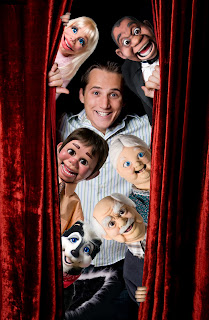

Back to the future?
3/18/2010
{kind=link}

From Ryan Bomgardner:
"I was in Ohio last week and met your former pastor. He was telling me that he had written to you about me and it made me smile thinking of meeting you many years ago. You probably wouldn’t remember me. I went to the vent conventions as a teenager (I’m thinking you may even have been one of judges on open mic) and was ‘in awe’ to meet the guy from Maher Studios.
"We’ve been blessed to stay very busy with ventriloquism as my career and it all started when I was about 12 with the Maher Course. (I’m now 26) I thought I’d drop you a line to say 'hi' and see how you’re doing. I’ve been traveling quite extensively and my wife will be quitting her job to become my full time agent (and road manager) which will be great."
"We’ve been blessed to stay very busy with ventriloquism as my career and it all started when I was about 12 with the Maher Course. (I’m now 26) I thought I’d drop you a line to say 'hi' and see how you’re doing. I’ve been traveling quite extensively and my wife will be quitting her job to become my full time agent (and road manager) which will be great."
* * * * * *
From Clinton:
"Of course, I remember you. How cool that you met Leo Miller, our former pastor. He may have told you that I started doing ventriloquism while going to the church he pastored there in Wichita (1950s and '60s). What he probably did not tell you was the fact, that had he not been such a huge encouragement to me in those early days, I doubt I would have even tried ventriloquism, much less stuck with it. Those were the days when some pastors did not want a ventriloquist darkening the doors of the church. But Leo suggested I try it, made places and times I could perform, even going so far as to write a script for me on one occasion when I said I didn't have time to do so. Although not a ventriloquist himself Leo is very much responsible for the fact that ventriloquism became my career."
"Of course, I remember you. How cool that you met Leo Miller, our former pastor. He may have told you that I started doing ventriloquism while going to the church he pastored there in Wichita (1950s and '60s). What he probably did not tell you was the fact, that had he not been such a huge encouragement to me in those early days, I doubt I would have even tried ventriloquism, much less stuck with it. Those were the days when some pastors did not want a ventriloquist darkening the doors of the church. But Leo suggested I try it, made places and times I could perform, even going so far as to write a script for me on one occasion when I said I didn't have time to do so. Although not a ventriloquist himself Leo is very much responsible for the fact that ventriloquism became my career."
* * * * *
Check out Ryan's site: http://www.ryanandfriends.com/